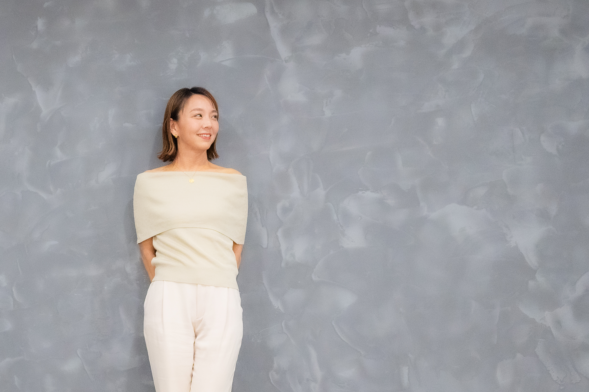
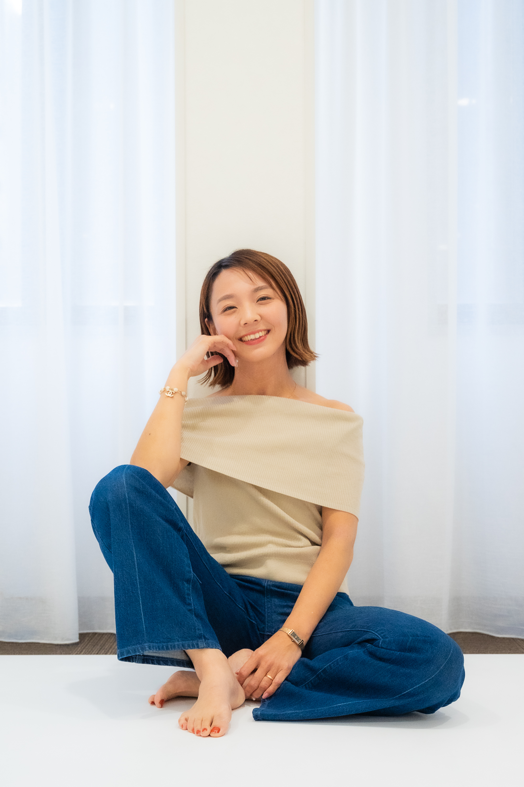

止まっていた思考と行動が、動き出す90分。
ビジョン・価値観・思考パターンを整理し、
次のステージへの突破口を見つける。
「できない理由」が、「どうしたらできる」へ。
90分 ／ 通常33,000円 → 5,500円（税込） 今月残り3枠
ブレークスルーセッションに申し込むCHECK LIST
TRANSFORMATION
目の前のタスクではなく、次のステージを基準に選択できるようになります。
→ 迷っていた方向性に判断軸ができ、「やる・やらない」を即断できるようになります。
「頑張らなきゃ」ではなく、"動きたくなる感覚"が戻ってきます。
→ 先延ばしにしていた新規施策やオファーに、自然と着手できるようになります。
挑戦することへのエネルギーが再起動していきます。
→ 価格・規模・新規事業など、これまで避けていた挑戦に踏み出せるようになります。
モヤモヤしていたものが言語化され、次の一歩が見えやすくなります。
→ 限られた時間とリソースを、本当に成果につながることへ集中できるようになります。
SESSION FLOW
今感じている停滞感や課題を整理し、現在地を明確にします。
「本当はどう在りたいのか」「どんな未来を実現したいのか」を言語化します。
思考・行動パターンを整理し、次のステージへの突破口を見つけます。
WHY THIS SESSION
多くのコンサルやセミナーは、「こうすればうまくいく」というやり方を渡します。でも、やり方だけでは、心がついていかない。仮に、一時的にうまくいっても、いずれ立ち行かなくなる。
だからこそ、このセッションで向き合うのは、その手前にあるマインドセットです。
「お金がない」 ではなく 「どうすれば生み出せる？」
「私にはできない」 ではなく 「どうしたらできる？」
「いつかやりたい」 ではなく 「今できることは？」
同じ出来事でも、どこに立って世界を見るかで、選べる一手が変わります。
無理に自分を変えようとするのではなく、安心して本音を話せる関係性の中で、ビジョン・価値観・思考パターンを整理していく。
すると、自分でも気づいていなかった想いや可能性が見え、止まっていた思考や行動が、自然と動き始めます。
「昨日と同じ選択」を続けている限り、景色は大きく変わらない。行動量を増やしても、線の傾きそのものは変わらないからです。
流れを変えるのは、努力の量ではなく、視点が切り替わる一点。小さな視点の転換や選択の変化が"ティッピングポイント"となり、その先の成長曲線を大きく変えていきます。
未来Aと未来Bを分けるのは、才能でも運でもなく、どこで視点を変えられるか。
その一点を一緒に見つけるのが、このセッションです。
PROFILE
山田 佳代YAMADA KAYO
脳科学・心理学コーチ
行動している。学んでいる。人にも会っている。
それなのに、どこか景色が変わらない。
かつての私も、同じでした。
料理教室をしていた頃、収入は月10万円ほど。「好きなことをさせてもらえている」「お客様にも喜んでもらえている」──それで十分だと、本当にやりたい挑戦から目をそらしていました。
転機は、ひとつの気づきでした。
自分の可能性を制限していたのは、ほかでもない自分自身だった、と。
そこから私は、自分の可能性を私以上に信じてくれる人に出逢い、たくさんの問いを投げてもらえる環境に身を置き、やり方（2割）より、在り方（8割）を整えることに集中しました。
すると、自分にムチを打って事業を大きくするのではなく、運ばれるように、ご縁がつながっていく感覚が生まれてきました。
その"突破口が生まれる瞬間"に、これまで何度も立ち会ってきました。
今度は、あなたの番です。
RESULTS & VOICES
40名
個別コーチング
実績
600h
年間
コーチング時間
3軸
個人・法人・
学校支援
Zoomセッションの様子
体験セッションを受けられた方、その先の継続サポートで変化された方の声をご紹介します。
山田佳代さんご自身が大変な時期を乗り越えられて、それを支えたのが、このコーチングだったと知りました。何より共感したのは、ご自身のビジネスのためではなく、かつて自分が苦しんだのと同じように悩んでいる人のお役に立ちたい──そんな想いでした。その想いが、私の心に響いたんです。正直に言うと、説明を受ける前から「この人だ」と直感のようなものを感じていました。
兵庫県 60代 不動産業 経営者 男性
自信が持てないことも、ビジネスの広げ方が分からず悩んでいたことも、「自分の力が足りないからだ」とずっと思っていました。でもセッションで気づいたのは、力が足りないのではなく、すでに自分には"ある"ものがたくさんあって、ただ、そこにフォーカスできていなかっただけ、ということでした。
島根県 30代 管理栄養士 M.I様
ひとりでは思い描けなかった"理想的な未来"を、一緒に想像する手伝いをしてもらいました。すると、自分が本当に求めているものが見えてきて、今の幸せに感謝しながらも、「もっと人生を楽しみたい」と素直に思えたんです。その未来を想像したら、叶えたくなりました。
広島県 50代 デザイナー A.K様
以前は、従業員のマインド管理をすべて自分で抱え込んでいて、経営者としての負担がとても大きい状態でした。約1年かけて、社長への1on1とチーム全体の研修を重ねる中で、メンバー一人ひとりが自分の軸を持ち、主体的に仕事へ向かうようになっていきました。一人ひとりの自己成長を後押ししてもらえたことで、気づけば年商が5倍近くに跳ね上がっていました。
事務・SNS代行トータルサポート会社 経営者
学びを繰り返すばかりで何年も動けずにいましたが、自分軸で商品を作り、有料モニターに10名が集まって35万円の売上に。お給料以外で収入を得たのは初めてで、胸がいっぱいになりました。その後も28万円の商品を成約できました。
京都府 40代 鉱物療法士 S.T様
間が空くほど「ちゃんとやらなきゃ」と動けなくなっていましたが、ブレーキをゆるめてもらったら気持ちが軽くなり、「できることをやってみよう」と再開。募集開始から6時間で10名満席になりました。
兵庫県 40代 幸運覚醒プロデューサー 小林ゆかり様
※成果には個人差があります。
あなたの"突破口"を、一緒に見つけにいきませんか。
ブレークスルーセッションに申し込むPRICING
通常価格 33,000円（税込）
¥5,500円
税込 / 特別価格
お支払い・その他
枠が埋まる前に、最初の一歩を。
ブレークスルーセッションに申し込むFAQ
気になることは解消できましたか？ まずは一歩、踏み出してみませんか。
ブレークスルーセッションに申し込む
TAKE THE FIRST STEP
変わるために必要なのは、もっと頑張ることではなく、一度立ち止まること。
事業も、人生も、もうひとつ上の景色へ。
フォームから必要事項をご入力ください。
こちらからご連絡し、開催日時を決めていきます。
当日に向けて、今感じていることをお聞かせください。
90分、対面またはZoomで実施します。
事業も、人生も、もうひとつ上の景色へ
ブレークスルーセッションに申し込むこちらに申込みフォームが入ります。
（エルメ等のフォームURLをリンクまたは埋め込みで設置してください）